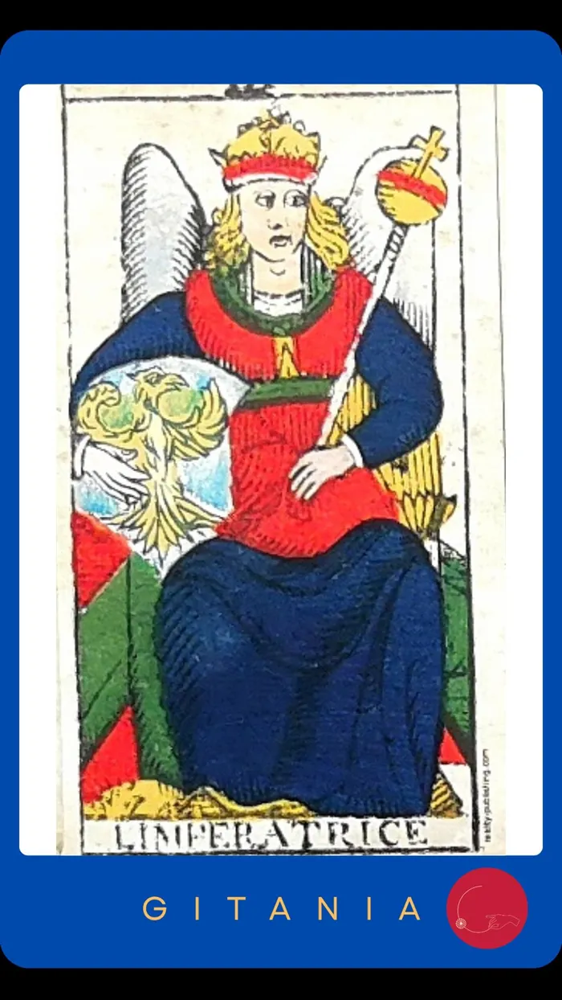

Arte y cultura
El Jardín del Tarot de Niki de Saint Phalle: 22 arcanos para caminar
En la Toscana hay un jardín donde los arcanos mayores miden varios metros, brillan con espejos y se pueden recorrer por dentro. Lo construyó la artista Niki de Saint Phalle durante más de veinte años. Esta es su historia, con fechas y fuentes.

El tarot nació en el norte de Italia en el siglo XV como un juego de cartas pintado a mano para las cortes, como contamos en nuestra primera entrada. Cinco siglos después volvió a Italia convertido en otra cosa: un parque de esculturas monumentales. Se llama Il Giardino dei Tarocchi, el Jardín del Tarot, está en Capalbio, en la región toscana de la Maremma, y es la obra a la que la artista franco-estadounidense Niki de Saint Phalle (1930-2002) dedicó la última parte de su vida.
1955: el día que vio el Park Güell
Todo empezó con un viaje. En 1955, Niki de Saint Phalle fue a Barcelona con su entonces esposo, el escritor Harry Mathews, y conoció el Park Güell de Antoni Gaudí. Años después lo contó así:
«Ahí encontré a la vez a mi maestro y mi destino. Temblé. Supe que un día yo también construiría un jardín de alegría».Niki de Saint Phalle, fragmento de The Tarot Garden (Benteli, 1997), según la Fundación Il Giardino dei Tarocchi (traducción propia)
La cronología de la fundación que hoy cuida el jardín menciona otras visitas que alimentaron ese sueño: el Palais Idéal del cartero Ferdinand Cheval, en Hauterives (Francia), que ella visitó en 1960-1961, y las Watts Towers de Simon Rodia, en Los Ángeles, que recorrió con el artista Jean Tinguely en 1962. Las tres son arquitecturas hechas a mano por alguien que no se rindió ante una idea enorme.
Un sueño contado en la montaña
En 1974, después de pasar por el hospital por un absceso pulmonar, consecuencia de años de trabajar con poliéster, Saint Phalle fue a Saint-Moritz, en Suiza, para recuperarse. Ahí reencontró a Marella Caracciolo Agnelli, una amiga de sus años en Nueva York, y le habló de su deseo: un jardín de esculturas inspirado en los símbolos del tarot. Los hermanos de Marella, Carlo y Nicola Caracciolo, le ofrecieron después un terreno en Garavicchio, en la Toscana.
En 1978 hizo las primeras maquetas a partir de los arcanos mayores, y en 1979 se limpió el terreno y se cavaron los cimientos. El primer trabajador fue Ugo Celletti, que entonces era cartero. Empezó trazando los caminos de piedra y terminó colocando espejos; ella escribió que se volvió «un poeta del espejo».
Cómo se construye una carta de varios metros
Cada escultura empieza como un esqueleto de varillas de acero soldadas. Jean Tinguely y su equipo suizo soldaron las primeras estructuras entre 1980 y 1982: La Sacerdotisa, El Mago, La Emperatriz, El Sol y El Árbol de la Vida. Después se rociaba concreto sobre la malla y, al final, se cubría todo con espejos, vidrio y cerámica. Desde 1984 la cerámica se hizo, se moldeó y se coció en hornos instalados en el propio jardín. Según la Región de Toscana, las figuras alcanzan entre 12 y 15 metros de altura.
Tinguely también dejó ahí sus máquinas en movimiento, como una Rueda de la Fortuna instalada en 1988 en el estanque frente a La Sacerdotisa. Y para pagar la obra, Saint Phalle decidió ser su propia mecenas: creó un perfume, obras múltiples y ediciones limitadas.
Vivir dentro de La Emperatriz
En 1983 la artista se mudó a La Emperatriz, una escultura con forma de esfinge que fue su taller y su casa durante siete años. En el texto que acompaña esa carta en el sitio de la fundación la describe como la Gran Diosa, reina del cielo y madre, y añade:
«Viví durante años dentro de esta madre protectora».Niki de Saint Phalle, texto sobre La Emperatriz, Fundación Il Giardino dei Tarocchi (traducción propia)
Ahí se reunía con su equipo, tomaban café, comía y modelaba las maquetas de las otras cartas. Hacia 1988, cuando vivir en «el vientre de su madre» le resultó demasiado opresivo, se hizo construir un estudio subterráneo dentro del jardín.
Un jardín lleno de lecturas propias
Lo más bonito para quien se interesa por el tarot es que cada escultura viene con la lectura personal de la artista. Sobre El Loco escribió que, en la baraja, es tan fuerte como todas las demás cartas juntas, porque representa al ser humano en su búsqueda espiritual, y cerró con una imagen preciosa:
«El Loco tiene pocas posesiones. Viaja ligero».Niki de Saint Phalle, texto sobre El Loco, Fundación Il Giardino dei Tarocchi (traducción propia)
Fiel a esa idea, la escultura de El Loco, como buen viajero, ha cambiado de lugar varias veces dentro del jardín. Y sobre La Muerte, la carta que más inquieta a muchas personas, su lectura no tiene nada de amenaza: la llama «el gran misterio de la vida», dice que sin la muerte la vida no tendría sentido y la presenta como una carta de renovación que deja crecer nuevos brotes. Es la misma idea que encontramos en muchas lecturas simbólicas: la carta habla de ciclos que se cierran, no de una desgracia.
El jardín también guarda su historia personal. En 1989 murió de sida su amigo y asistente Ricardo Menon, y ella creó la escultura de un gato en su memoria, para que siguiera presente en el jardín para siempre.
Un muro, un dragón y la apertura
Para la entrada, Saint Phalle pidió al arquitecto Mario Botta un muro que contrastara con el interior. Él levantó una pared de piedra local, como una fortaleza, que separa el mundo de fuera del mundo de dentro. Ella escribió que ese muro simboliza la protección, «como el dragón que guarda el tesoro en los cuentos de hadas» (traducción propia). El jardín, que ya recibía visitantes desde antes, se abrió oficialmente al público el 15 de mayo de 1998.
Niki de Saint Phalle murió en La Jolla, California, el 21 de mayo de 2002, a los 71 años. Por voluntad suya, todo el trabajo en curso se detuvo. Desde entonces una fundación lo conserva tal como lo dejó; abre cada año del 1 de abril al 15 de octubre y dedica el invierno a mantener y restaurar las esculturas. En 2008, el crítico de jardines Tim Richardson lo incluyó en una lista de los 50 jardines más bellos del mundo en el Weekly Telegraph.
Lo que nos deja este jardín
El Jardín del Tarot muestra algo que a veces se olvida: los arcanos son, antes que nada, imágenes, y cada época y cada persona las vuelve a imaginar. Jung habló de las cartas como «símbolos con los que se juega»; Niki de Saint Phalle jugó con ellas a escala de arquitectura, con concreto, espejos y cerámica, y les dio su propia voz.
Te proponemos un ejercicio inspirado en su Loco. Piensa en un viaje que estés por empezar, grande o pequeño, y pregúntate: si viajara ligero, ¿qué dejaría atrás? ¿Qué es lo único que de verdad necesito llevar conmigo? No hay respuesta correcta. Lo que aparece al mirar la imagen ya es tu lectura.
Fuentes
- Fondazione Il Giardino dei Tarocchi. «The Tarot Garden». ilgiardinodeitarocchi.it
- Fondazione Il Giardino dei Tarocchi. «Chronology» (1955-2002). ilgiardinodeitarocchi.it
- Saint Phalle, Niki de. Fragmento de The Tarot Garden, con Giulio Pietromarchi. Berna: Benteli, 1997. Publicado como «In the artists words» por la Fondazione Il Giardino dei Tarocchi. ilgiardinodeitarocchi.it
- Fondazione Il Giardino dei Tarocchi. Textos de la artista sobre las cartas: La Emperatriz, El Loco y La Muerte.
- Regione Toscana. «Giardino dei Tarocchi» (Capalbio), actualizado el 27 de mayo de 2016. regione.toscana.it
- Niki Charitable Art Foundation. «Tarot Garden makes top 50 list», 4 de septiembre de 2008. nikidesaintphalle.org
Las citas de Niki de Saint Phalle provienen de los textos en inglés publicados por la Fondazione Il Giardino dei Tarocchi; las traducciones al español son nuestras.